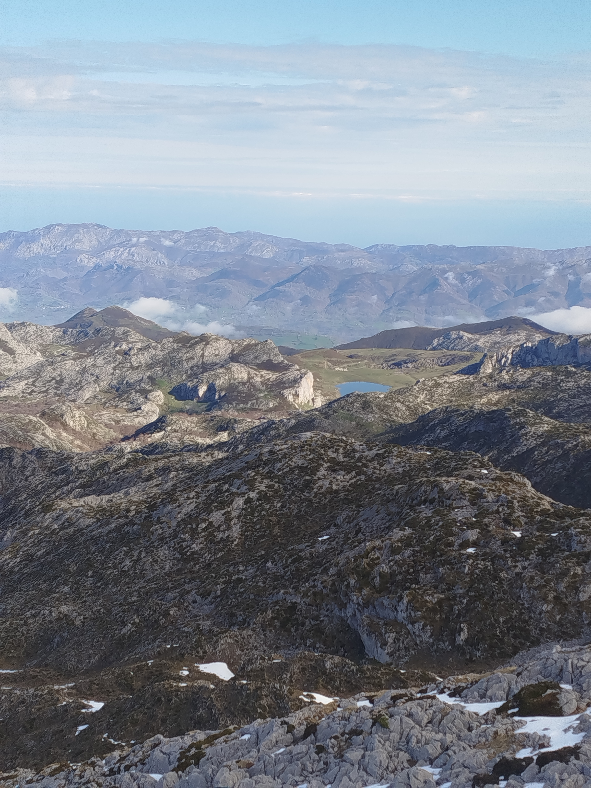
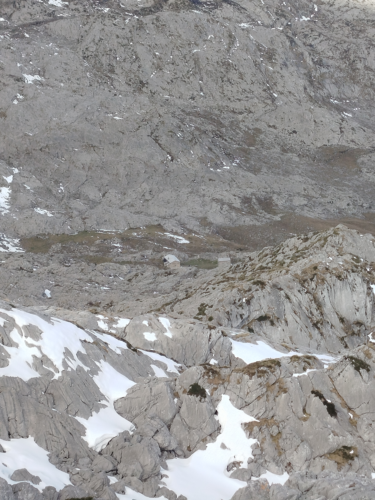
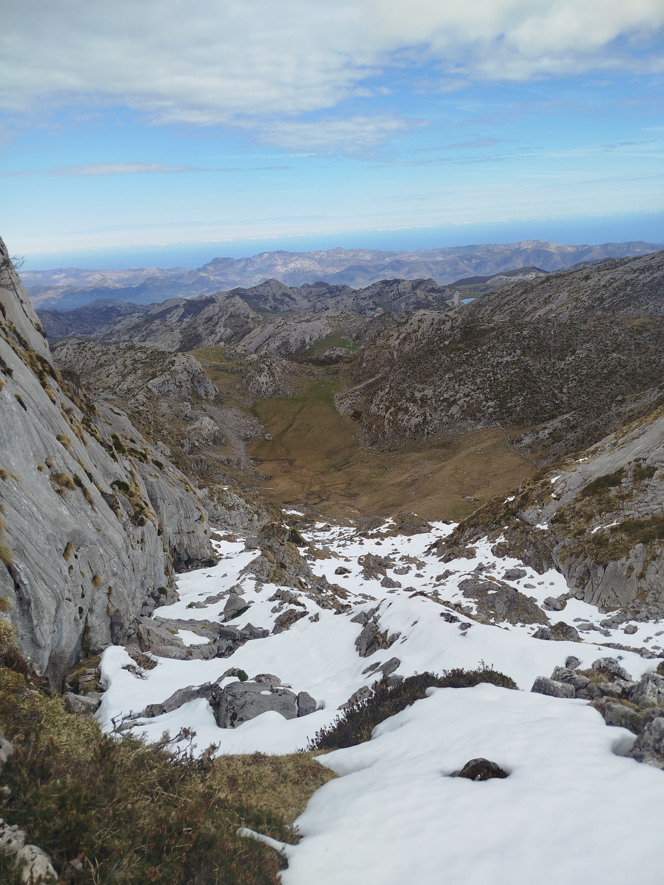
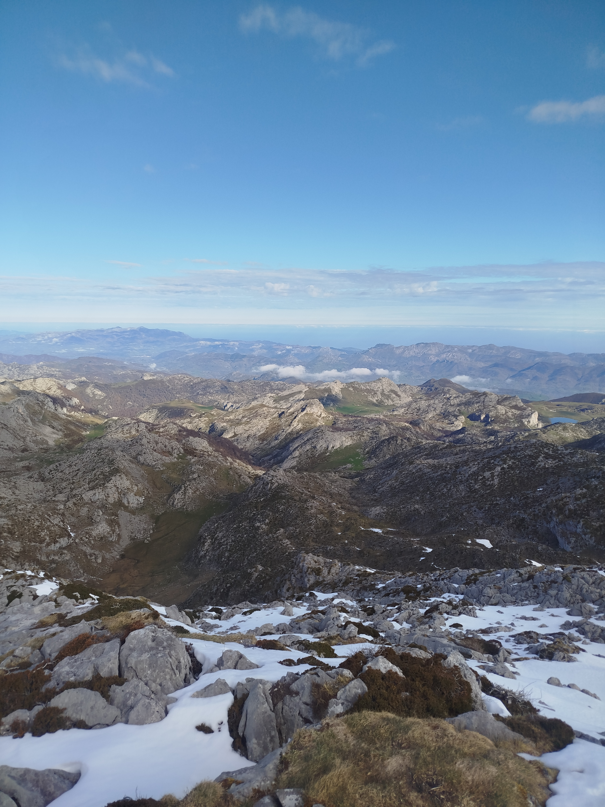
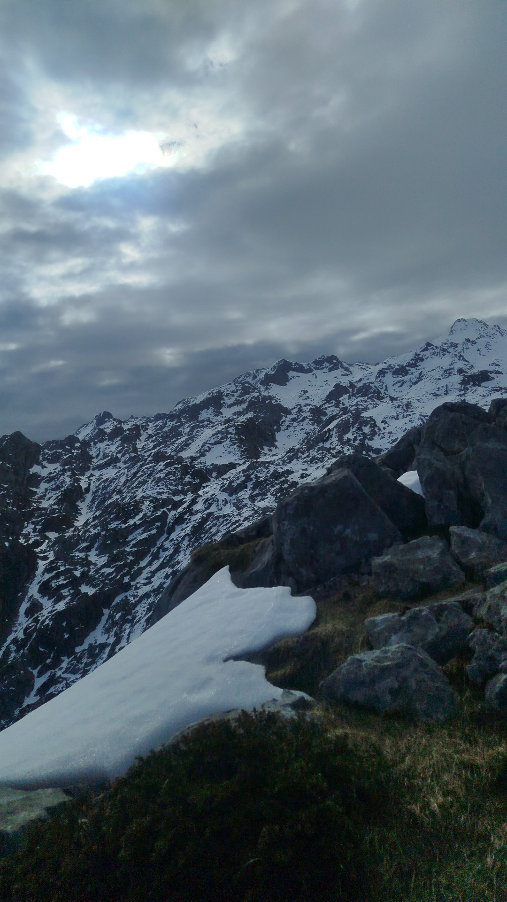

Pico Catalimpó

La cumbre discreta con carácter propio
El Pico Catalimpó, a 1.780 metros de altitud, es una de esas cimas que pasan algo desapercibidas frente a vecinos más famosos como el Jultayu o el Cuvicente, pero que esconde un encanto genuino. Su ascensión ofrece una experiencia de montaña auténtica, sin la masificación de otras rutas del macizo occidental, lo que la convierte en una opción perfecta para quienes buscan tranquilidad y contacto directo con el entorno natural de los Picos.
El reino de los rebecos
El Catalimpó es conocido entre los montañeros locales como uno de los mejores lugares del macizo para avistar rebecos cantábricos (Rupicapra pyrenaica parva). Las laderas kársticas y los riscos que coronan la cumbre son el hábitat natural de estas ágiles cabras montesas, que se mueven con una soltura pasmosa por terrenos que para cualquier humano representan un desafío. También pueden verse buitres leonados, alimoches y, en los días más afortunados, algún halcón peregrino.
Una perspectiva diferente sobre los Lagos
La gran sorpresa del Catalimpó es la perspectiva que ofrece sobre los famosos Lagos de Covadonga y su entorno. Desde su cima, el Lago Enol y el Lago Ercina aparecen como dos joyas azules engastadas en el verde de las praderas alpinas, con el Santuario de Covadonga visible a lo lejos en el valle. Una vista que difícilmente se olvida y que justifica la subida por sí sola. El acceso más habitual parte desde Vegarredonda.




